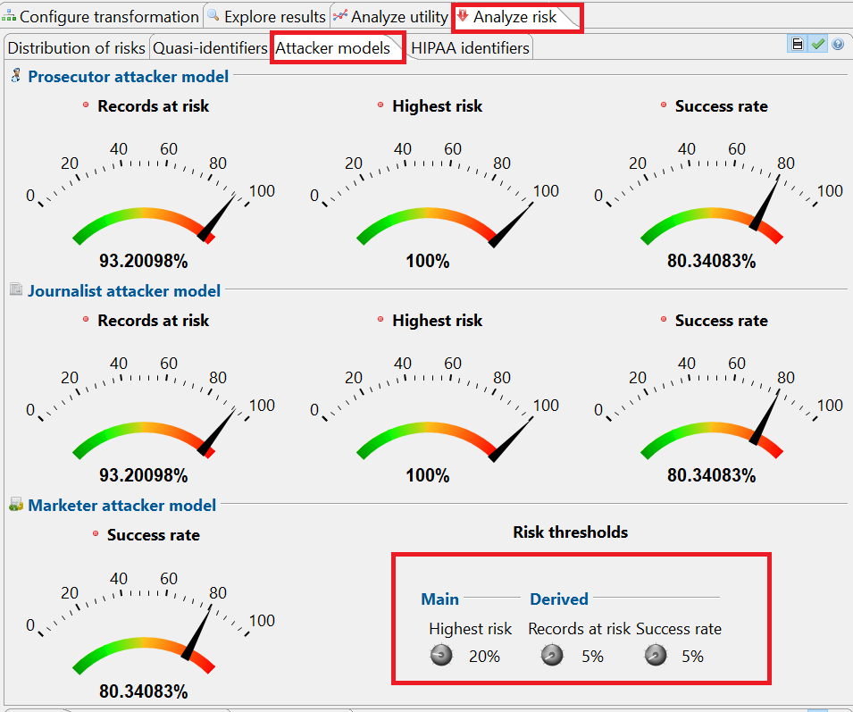

This view displays an overview of several measures for re-identification risks. In the upper area of this perspective, risk estimates are provided for three different attacker models: (1) the prosecutor scenario, (2) the journalist scenario and (3) the marketer scenario.
Thresholds can be provided for the highest risk of any record, for the records that have a risk higher than this threshold and for the average fraction of records that can successfully be re-identified. More details about the methods can be found in the book Guide to the anonymization of Personal Health Information by Khaled el Emam.
In the lower part of the perspective, selected measures of prosecutor re-identification risks are displayed. These measures are based on the sample itself. They are complemented by numbers on population uniqueness from a selected statistical model: